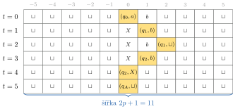
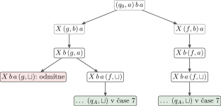
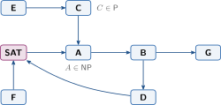
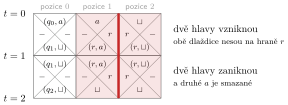

6.4 Úlohy navíc¶
Úlohy procvičují důkaz Cook–Levinovy věty „zevnitř“: převod dláždění na formuli (oddíl 6.1.3), dlaždice a výpočetní tabulku konkrétního stroje (oddíl 6.1.2), velikost formule, roli nedeterminismu a polynomiálního času a nakonec práci s mapou redukcí podle receptu z oddílu 6.3.
Neoficiální úlohy
Úlohy v tomto oddílu nejsou oficiální zadání předmětu. Jsou to procvičovací úlohy navíc k látce kapitoly; dláždění, tabulky, počty proměnných a klauzulí i počty splňujících ohodnocení byly přepočítány programem (simulace strojů a hrubou silou vyčíslená dláždění a formule na všech vstupech do délky 5), úlohy 6.6 a 6.7 jsou úvahové a byly odvozeny ručně (6.7 navíc zkontrolována výpočtem tranzitivního uzávěru).
6.4.1 Rozcvička¶
Úloha 6.1 (formule pro malé dláždění)
Máme tři typy dlaždic z příkladu 6.4 (backtracking na mřížce \(3\times3\); barvy v pořadí horní, pravá, spodní, levá hrana): A = (červená, šedá, modrá, zelená), B = (červená, oranžová, červená, šedá), D = (modrá, šedá, modrá, zelená). Plocha má rozměr \(2\times2\), pozice značíme \((x,y)\), kde \(x\in\{0,1\}\) je sloupec zleva a \(y\in\{0,1\}\) řádek shora. Okraje: nahoře obě hrany červené, vlevo obě zelené, vpravo obě oranžové, dole vlevo modrá a vpravo červená.

Dlaždice A, B, D a plocha s předbarvenými okraji.
- Sestavte formuli \(\varphi\) z redukce \(\prob{Dlaždičkování}\redp\prob{SAT}\): kolik má proměnných a kolik klauzulí každého ze čtyř typů? Typ 4 vypište celý.
- Najděte všechna splňující ohodnocení \(\varphi\) a přečtěte z nich dláždění.
- Změníme pravý dolní okraj z červené na modrou. Ukažte na klauzulích, že formule je nesplnitelná.
Řešení
a) Proměnné. \(u^{(x,y)}_i\) pro 4 pozice a 3 typy \(i\in\{A,B,D\}\), tedy \(4\cdot3=12\) proměnných.
Typ 1 (alespoň jeden typ): jedna klauzule \(\bigl(u^{(x,y)}_A\lor u^{(x,y)}_B\lor u^{(x,y)}_D\bigr)\) na pozici, celkem 4.
Typ 2 (nejvýše jeden typ): na každé pozici \(\binom32=3\) klauzule \((\lnot u_A\lor\lnot u_B)\), \((\lnot u_A\lor\lnot u_D)\), \((\lnot u_B\lor\lnot u_D)\), celkem 12.
Typ 3 (sousedé pasují). Vodorovně leží \(p\) vlevo vedle \(q\) správně, jen když pravá hrana \(p\) = levá hrana \(q\). Pravé hrany: A šedá, B oranžová, D šedá; levé hrany: A zelená, B šedá, D zelená. Pasují jen dvojice \((A,B)\) a \((D,B)\), zbylých \(9-2=7\) dvojic je zakázaných. Svisle leží \(p\) nad \(q\) správně, jen když spodní hrana \(p\) = horní hrana \(q\). Spodní: A modrá, B červená, D modrá; horní: A červená, B červená, D modrá. Pasují \((A,D)\), \((D,D)\), \((B,A)\), \((B,B)\), zakázaných je 5. Vodorovně sousedících dvojic pozic jsou 2, svisle také 2, takže klauzulí typu 3 je \(2\cdot7+2\cdot5=24\), např. \(\bigl(\lnot u^{(0,0)}_A\lor\lnot u^{(0,1)}_A\bigr)\) (A nad A: modrá \(\ne\) červená).
Typ 4 (okraje). Každá pozice plochy \(2\times2\) je rohová a sousedí se dvěma okraji:
- \((0,0)\), nahoře červená, vlevo zelená: A sedí, B má vlevo šedou, D nahoře modrou \(\Rightarrow\) \((\lnot u^{(0,0)}_B)\), \((\lnot u^{(0,0)}_D)\);
- \((1,0)\), nahoře červená, vpravo oranžová: sedí jen B \(\Rightarrow\) \((\lnot u^{(1,0)}_A)\), \((\lnot u^{(1,0)}_D)\);
- \((0,1)\), vlevo zelená, dole modrá: A i D sedí, B má vlevo šedou \(\Rightarrow\) \((\lnot u^{(0,1)}_B)\);
- \((1,1)\), vpravo oranžová, dole červená: sedí jen B \(\Rightarrow\) \((\lnot u^{(1,1)}_A)\), \((\lnot u^{(1,1)}_D)\).
Celkem 7 klauzulí typu 4 a formule má \(4+12+24+7=47\) klauzulí.
b) Řešení. Jednotkové klauzule typu 4 spolu s klauzulí typu 1 na téže pozici vynutí \(u^{(0,0)}_A=1\), \(u^{(1,0)}_B=1\) a \(u^{(1,1)}_B=1\). Na pozici \((0,1)\) zbývá A nebo D; klauzule typu 3 \(\bigl(\lnot u^{(0,0)}_A\lor\lnot u^{(0,1)}_A\bigr)\) vylučuje A, takže \(u^{(0,1)}_D=1\). Klauzule typu 2 pak vynutí, že všech ostatních 8 proměnných je 0. Ohodnocení je tím určeno jednoznačně a splňuje i všechny klauzule typu 3, protože odpovídá správnému dláždění: nahoře A, B, dole D, B (A–B: šedá = šedá, D–B: šedá = šedá, A nad D: modrá = modrá, B nad B: červená = červená). Formule má tedy právě jedno splňující ohodnocení a plocha právě jedno dláždění. (Ověřeno i hrubou silou přes všech \(2^{12}\) ohodnocení.)
c) Na pozici \((1,1)\) je teď okraj vpravo oranžový a dole modrý. A má vpravo šedou, B má dole červenou, D má vpravo šedou, proto vzniknou tři jednotkové klauzule \((\lnot u^{(1,1)}_A)\), \((\lnot u^{(1,1)}_B)\), \((\lnot u^{(1,1)}_D)\). Spolu s klauzulí typu 1 \(\bigl(u^{(1,1)}_A\lor u^{(1,1)}_B\lor u^{(1,1)}_D\bigr)\) už jen tyto čtyři klauzule nelze splnit současně, takže \(\varphi\) je nesplnitelná – přesně jako dláždění, na pozici \((1,1)\) žádná dlaždice nepasuje.
Úloha 6.2 (dlaždice z přechodové funkce)
Jednopáskový stroj \(M\) nad \(\Sigma=\{a,b\}\) s páskovou abecedou \(\Gamma=\{a,b,X,\blank\}\) má tyto přechody (jiné nemá; kde přechod chybí, stroj odmítne):
| \(\delta(q_0,a)=(q_1,X,\Rgt)\) | \(\delta(q_2,a)=(q_2,\blank,\Lft)\) |
| \(\delta(q_1,a)=(q_1,a,\Rgt)\) | \(\delta(q_2,b)=(q_2,\blank,\Lft)\) |
| \(\delta(q_1,b)=(q_1,b,\Rgt)\) | \(\delta(q_2,X)=(q_A,\blank,\Stay)\) |
| \(\delta(q_1,\blank)=(q_2,\blank,\Lft)\) | \(\delta(q_A,\blank)=(q_A,\blank,\Stay)\) |
Stroj si první \(a\) přepíše na značku \(X\), dojede na konec slova, vrací se a maže, a na značce \(X\) ji smaže a přijme – je to vychovaný stroj pro jazyk slov začínajících písmenem \(a\). Dlaždice zapisujeme jako na obr. 6.4: \([\,\text{horní}\mid\text{pravá}\mid\text{spodní}\mid\text{levá}\,]\), svislé hrany nesou symbol nebo dvojici (stav, symbol), boční hrany předávaný stav nebo \(-\).
- Které z šesti dlaždic na obrázku patří do sady dlaždic sestrojené ze stroje \(M\)? U každé zdůvodněte.
- Vypište celou sadu dlaždic a určete její velikost \(t\).

Kandidáti (1)–(6): horní hrana = čas \(t\), spodní hrana = čas \(t+1\).
Řešení
a) Dlaždice vzniknou třemi způsoby (oddíl 6.1.2): přepis \([c\mid-\mid c\mid-]\) pro každý symbol \(c\in\Gamma\); jedna dlaždice čtení/zápisu pro každý přechod; a „přijímací“ dlaždice \([d\mid-\mid(r,d)\mid r]\) (stav \(r\) přišel zleva) resp. \([d\mid r\mid(r,d)\mid-]\) (stav \(r\) přišel zprava) pro každý symbol \(d\) a každý stav \(r\), do kterého vede pohyb doprava resp. doleva.
- \([(q_1,b)\mid q_1\mid b\mid-]\) patří: je to dlaždice přechodu \(\delta(q_1,b)=(q_1,b,\Rgt)\) – hlava čte \(b\), zapíše \(b\) a stav \(q_1\) předá pravým okrajem doprava.
- \([(q_1,b)\mid-\mid(q_1,b)\mid-]\) nepatří: znamenala by krok na místě \((q_1,b,\Stay)\), takový přechod \(M\) nemá (\(M\) v \(q_1\) na \(b\) jde doprava).
- \([a\mid q_2\mid(q_2,a)\mid-]\) patří: přijímací dlaždice – hlava byla vpravo a pohybem doleva přišla do stavu \(q_2\) (do \(q_2\) vedou přechody s \(\Lft\)), na políčku je \(a\).
- \([b\mid-\mid a\mid-]\) nepatří: bez hlavy se symbol jen opisuje, \(b\) se nesmí změnit na \(a\).
- \([(q_2,X)\mid-\mid(q_A,\blank)\mid-]\) patří: přechod \(\delta(q_2,X)=(q_A,\blank,\Stay)\) – zápis i nový stav zůstávají v téže buňce.
- \([a\mid-\mid(q_2,a)\mid q_2]\) nepatří: stav \(q_2\) by přišel zleva, tedy po pohybu doprava do \(q_2\). Do \(q_2\) ale vedou jen přechody s \(\Lft\), taková přijímací dlaždice se nevyrábí.
b) Celá sada:
- přepis (4): \([a\mid-\mid a\mid-]\), \([b\mid-\mid b\mid-]\), \([X\mid-\mid X\mid-]\), \([\blank\mid-\mid\blank\mid-]\);
- čtení/zápis (8, jedna na přechod): \([(q_0,a)\mid q_1\mid X\mid-]\), \([(q_1,a)\mid q_1\mid a\mid-]\), \([(q_1,b)\mid q_1\mid b\mid-]\), \([(q_1,\blank)\mid-\mid\blank\mid q_2]\), \([(q_2,a)\mid-\mid\blank\mid q_2]\), \([(q_2,b)\mid-\mid\blank\mid q_2]\), \([(q_2,X)\mid-\mid(q_A,\blank)\mid-]\), \([(q_A,\blank)\mid-\mid(q_A,\blank)\mid-]\);
- příjem zleva, stav \(q_1\) (4): \([d\mid-\mid(q_1,d)\mid q_1]\) pro \(d\in\{a,b,X,\blank\}\);
- příjem zprava, stav \(q_2\) (4): \([d\mid q_2\mid(q_2,d)\mid-]\) pro \(d\in\{a,b,X,\blank\}\).
Celkem \(t=|\Gamma|+|\delta|+4+4=4+8+4+4=20\) typů. Některé se v žádném výpočtu nepoužijí (třeba \([X\mid-\mid(q_1,X)\mid q_1]\)), konstrukce je ale vyrábí mechanicky pro všechna \(d\), aniž zkoumá dosažitelnost; na správnosti to nic nemění. Hlavně: \(t\) závisí jen na \(M\), ne na vstupu.
Úloha 6.3 (výpočetní tabulka)
Vezměte stroj \(M\) z úlohy Úloha 6.2 (dlaždice z přechodové funkce).
- Kolik kroků udělá \(M\) na slově délky \(n\ge1\) začínajícím \(a\)? Ukažte, že \(p(n)=2n+1\) je časová mez \(M\).
- Sestavte výpočetní tabulku pro \(x=ab\): řádky \(t=0,\dots,p(2)\), sloupce pozice \(-p(2),\dots,p(2)\).
- V každém řádku dláždění (krok \(t\to t+1\)) určete, na kterých pozicích leží jiná dlaždice než přepis a která. Kolik dlaždic má celé dláždění a kolik z nich je přepisových?
Řešení
a) Slovo \(x_1\dots x_n\) s \(x_1=a\): krok 1 přepíše \(x_1\) na \(X\) a hlava je na pozici 1; dalšími \(n-1\) kroky přejde v \(q_1\) přes \(x_2,\dots,x_n\) a po kroku \(n\) stojí na pozici \(n\) na \(\blank\). Krok \(n+1\) ji vrátí na pozici \(n-1\) ve stavu \(q_2\), kroky \(n+2,\dots,2n\) smažou pozice \(n-1,\dots,1\) a hlava je po kroku \(2n\) na pozici 0 na \(X\). Krok \(2n+1\) smaže \(X\) a přejde do \(q_A\). Přijímající výpočet má tedy přesně \(2n+1\) kroků a končí v jediné přijímací konfiguraci (prázdná páska, hlava na 0). Začíná-li slovo \(b\) nebo je prázdné, \(M\) hned odmítne (přechod \(\delta(q_0,b)\) ani \(\delta(q_0,\blank)\) není). Žádná větev tedy nemá víc než \(2n+1\) kroků a \(p(n)=2n+1\) je mez.
b) Pro \(n=2\) je \(p=5\), tabulka má \(p+1=6\) řádků a \(2p+1=11\) sloupců (pozice \(-5\) až \(5\)):

Výpočetní tabulka stroje \(M\) na \(x=ab\). Žlutě buňka s hlavou (stav, symbol).
Řádky po řadě: \((q_0,a)\,b\); \(X\,(q_1,b)\); \(X\,b\,(q_1,\blank)\); \(X\,(q_2,b)\); \((q_2,X)\); \((q_A,\blank)\) (ostatní buňky \(\blank\)). Poslední řádek je přesně předepsaný spodní okraj.
c) Dláždění má \(p=5\) řádků po \(11\) dlaždicích, tj. \(55\) dlaždic. Jiné než přepisové (pozice v závorce):
- krok \(0\to1\): \([(q_0,a)\mid q_1\mid X\mid-]\) (0) a \([b\mid-\mid(q_1,b)\mid q_1]\) (1);
- krok \(1\to2\): \([(q_1,b)\mid q_1\mid b\mid-]\) (1) a \([\blank\mid-\mid(q_1,\blank)\mid q_1]\) (2);
- krok \(2\to3\): \([b\mid q_2\mid(q_2,b)\mid-]\) (1) a \([(q_1,\blank)\mid-\mid\blank\mid q_2]\) (2);
- krok \(3\to4\): \([X\mid q_2\mid(q_2,X)\mid-]\) (0) a \([(q_2,b)\mid-\mid\blank\mid q_2]\) (1);
- krok \(4\to5\): \([(q_2,X)\mid-\mid(q_A,\blank)\mid-]\) (0) – pohyb na místě, přijímací dlaždice není potřeba.
Nepřepisových dlaždic je \(2+2+2+2+1=9\), přepisových \(55-9=46\). Při pohybu hlavy leží v řádku vždy dvě nepřepisové dlaždice vedle sebe – obě nesou na společné hraně předávaný stav. (Program potvrdil, že jiné dláždění této mřížky neexistuje.)
6.4.2 Na úrovni testu¶
Úloha 6.4 (velikost formule)
Pro stroj \(M\) z úlohy Úloha 6.2 (dlaždice z přechodové funkce) (\(t=20\) typů dlaždic, \(p(n)=2n+1\)) a vstup délky \(n\) složíme obě redukce \(L(M)\mathrel{\href{../ch-redukce/ch-redukce-jak-porovnat-slozitost-dvou-problemu.html#def-redukce}{\class{woo-pk-def-redukce}{\redp}}}\href{ch-cook-cook-levinova-veta.html#prob-dlazdickovani}{\class{woo-pk-prob-dlazdickovani}{\prob{Dlaždičkování}}}\mathrel{\href{../ch-redukce/ch-redukce-jak-porovnat-slozitost-dvou-problemu.html#def-redukce}{\class{woo-pk-def-redukce}{\redp}}}\href{ch-cook-cook-levinova-veta.html#prob-sat}{\class{woo-pk-prob-sat}{\prob{SAT}}}\).
- Vyjádřete jako funkci \(n\) rozměry mřížky, počet pozic, počet proměnných a počet klauzulí typu 1 a 2; pro typy 3 a 4 dejte horní odhad.
- Dosaďte \(n=10\).
- Zdůvodněte, proč je celá redukce polynomiální, a co se změní pro obecný NDTS s časem \(p(n)\).
Řešení
a) Mřížka má šířku \(W=2p+1=4n+3\) a výšku \(H=p=2n+1\) dlaždic (řádek dlaždic = jeden krok; horní okraj je konfigurace v čase 0, spodní v čase \(p\)). Počet pozic \(N=W\cdot H=(4n+3)(2n+1)=8n^2+10n+3\).
- proměnné: \(t\cdot N=20N\);
- typ 1: jedna na pozici, \(N\);
- typ 2: \(\binom t2=190\) na pozici, \(190N\);
- typ 3: vodorovně sousedních dvojic pozic je \((W-1)H\), svisle \(W(H-1)\), dohromady \(2N-W-H\); na každou dvojici nejvýše \(t^2=400\) zakázaných kombinací, tedy nejvýše \(400(2N-W-H)\);
- typ 4: okrajových pozic je \(2W+2H-4=12n+4\), na každé nejvýše \(t=20\) nepasujících dlaždic, tedy nejvýše \(20(12n+4)\).
b) \(n=10\): \(W=43\), \(H=21\), \(N=903\). Proměnných \(18\,060\); typ 1: \(903\); typ 2: \(171\,570\); typ 3: nejvýše \(400\cdot(1806-64)=696\,800\); typ 4: nejvýše \(20\cdot124=2\,480\). Celkem nejvýše \(871\,753\) klauzulí. (Přesný počet spočítaný programem pro tuto sadu dlaždic a slovo \(x\) začínající \(a\): typ 3 má \(493\,894\) a typ 4 \(1\,694\) klauzulí, celkem \(668\,061\). Pro \(x\) začínající \(b\) je typ 4 o jednu klauzuli větší – dvojici \((q_0,b)\) nemá nahoře žádná dlaždice.)
c) Počet klauzulí je \(O(N t^2)=O(n^2)\), protože \(t=20\) je konstanta – závisí jen na stroji \(M\), ne na vstupu. Každá klauzule má nejvýše \(t\) literálů a každý literál zapíšeme \(O(\log N)\) bity, celá formule má tedy \(O(n^2\log n)\) bitů. Vytvoříme ji jednoduchými cykly přes pozice a dvojice typů, tedy v čase polynomiálním v délce výstupu, a tím i v \(n\). Okraje vypíšeme z \(x\) v čase \(O(p(n))\). Pro obecný NDTS s časem \(p(n)\) vyjde \(N=(2p(n)+1)\,p(n)=O(p(n)^2)\) pozic a \(O(p(n)^2)\) klauzulí s konstantou závislou na \(M\) – stále polynom v \(n\), protože \(p\) je polynom.
Úloha 6.5 (kde je nedeterminismus)
Nedeterministický stroj \(N\) nad \(\{a,b\}\) přijímá slova, která obsahují aspoň jedno \(a\): hlava jde doprava ve stavu \(g\) („ještě jsem nevybral“) a na některém \(a\) se může rozhodnout přejít do stavu \(f\) („toto je moje \(a\)“). Na konci slova se ve stavu \(c\) vrací, maže a na značce \(X\) (pozice 0) přijme. Přechody:
- \(\delta(q_0,a)=\{(g,X,\Rgt),(f,X,\Rgt)\}\), \(\delta(q_0,b)=\{(g,X,\Rgt)\}\),
- \(\delta(g,a)=\{(g,a,\Rgt),(f,a,\Rgt)\}\), \(\delta(g,b)=\{(g,b,\Rgt)\}\), \(\delta(g,\blank)=\emptyset\),
- \(\delta(f,a)=\{(f,a,\Rgt)\}\), \(\delta(f,b)=\{(f,b,\Rgt)\}\), \(\delta(f,\blank)=\{(c,\blank,\Lft)\}\),
- \(\delta(c,a)=\{(c,\blank,\Lft)\}\), \(\delta(c,b)=\{(c,\blank,\Lft)\}\), \(\delta(c,X)=\{(q_A,\blank,\Stay)\}\), \(\delta(q_A,\blank)=\{(q_A,\blank,\Stay)\}\).
- Ukažte, že každá větev výpočtu na slově délky \(n\) má nejvýše \(2n+1\) kroků, a určete, kolik přijímajících větví má výpočet na slově \(w\).
- Kde přesně se nedeterminismus \(N\) projeví v sadě dlaždic? Která místa dláždění pro \(w=aba\) se mohou lišit?
- Kolik splňujících ohodnocení má formule \(\varphi_w\) (složení obou redukcí s \(p(n)=2n+1\))? Kolik by jich mohl mít deterministický stroj, např. \(M\) z úlohy Úloha 6.2 (dlaždice z přechodové funkce)? Kde ve formuli „je“ nedeterminismus?
Řešení
a) V \(q_0\), \(g\) a \(f\) jde hlava jen doprava. Větev, která do \(f\) nikdy nepřejde, dojde po \(n\) krocích ve stavu \(g\) na \(\blank\) na pozici \(n\) a odmítne. Větev, která přejde do \(f\), dojde po \(n\) krocích na pozici \(n\) ve stavu \(f\); krok \(n+1\) ji vrátí na pozici \(n-1\) ve stavu \(c\), kroky \(n+2,\dots,2n\) smažou pozice \(n-1,\dots,1\) a krok \(2n+1\) smaže \(X\) a přijme. Každá větev má tedy nejvýše \(2n+1\) kroků a přijímající právě \(2n+1\). Přijímající větev je jednoznačně určena tím, na kterém \(a\) přejde z \(g\) (resp. \(q_0\)) do \(f\) – potom už je výpočet deterministický. Přijímajících větví je proto přesně \(\#_a(w)\) (počet výskytů \(a\) ve \(w\)).
b) Nedeterminismus znamená, že pod jednou horní barvou může ležet víc dlaždic čtení/zápisu. Pod horní barvou \((q_0,a)\) pasují dvě: \([(q_0,a)\mid g\mid X\mid-]\) a \([(q_0,a)\mid f\mid X\mid-]\); pod \((g,a)\) také dvě: \([(g,a)\mid g\mid a\mid-]\) a \([(g,a)\mid f\mid a\mid-]\). Zvolená dlaždice pošle boční hranou jiný stav, a tím určí i přijímací dlaždici souseda vpravo (\([d\mid-\mid(g,d)\mid g]\) nebo \([d\mid-\mid(f,d)\mid f]\)). Pro \(w=aba\) (\(p=7\)) se volí v kroku \(0\to1\) (pozice 0 a 1) a v kroku \(2\to3\) (pozice 2 a 3). Obě přijímající větve se v čase 3 sejdou ve stejné konfiguraci \(X\,b\,a\,(f,\blank)\), jejich dláždění se proto liší jen v prvních třech řádcích (kroky \(0\to1\) až \(2\to3\), kde nesou stav \(g\) resp. \(f\)) a od kroku \(3\to4\) jsou stejná; větve ukazuje obrázek.

Strom výpočtu \(N\) na \(aba\): dvě přijímající větve (vybráno první, resp. druhé \(a\)) a jedna odmítající.
c) Tvrdíme, že splňujících ohodnocení \(\varphi_w\) je přesně tolik, kolik je přijímajících výpočtů délky \(p\), tedy \(\#_a(w)\); pro \(w=aba\) dvě. Důkaz ve dvou krocích:
- Ohodnocení = dláždění. Klauzule typu 1 a 2 vynutí na každé pozici právě jednu dlaždici a klauzule typu 3 a 4 pak říkají přesně „sousedé a okraje pasují“. Splňující ohodnocení a správná dláždění si tedy odpovídají vzájemně jednoznačně.
- Dláždění = přijímající výpočet. Indukcí po řádcích: horní hrany řádku tvoří konfiguraci s jedinou hlavou. Přijímací dlaždice s \(g\) nebo \(f\) vyžaduje levého souseda, který tento stav posílá doprava – to umí jen dlaždice s hlavou (stavy \(g,f\) se předávají jen doprava, \(c\) jen doleva; symetricky přijímací dlaždice s \(c\) potřebuje pravého souseda s hlavou, který posílá \(c\) doleva). Proto řádek tvoří přepisové dlaždice, jedna dlaždice čtení/zápisu pod hlavou (její výběr = výběr přechodu) a při pohybu přijímací dlaždice souseda ve směru pohybu. Spodní hrany řádku jsou pak přesně následná konfigurace. Dláždění tedy odpovídá posloupnosti \(p\) přechodů ze startu do předepsané koncové konfigurace a naopak; různé volby dávají různá dláždění.
Pro \(p=2n+1\) jsou to přesně přijímající větve z a), tedy \(\#_a(w)\) ohodnocení (pro \(w\) bez \(a\) žádné – formule je nesplnitelná). Pro deterministický \(M\) je přechod pod hlavou vždy jediný, dláždění je nejvýše jedno a \(\varphi_x\) má nejvýše jedno splňující ohodnocení.
Ve formuli není žádná zvláštní klauzule pro nedeterminismus: klauzule jen zakazují nepasující sousedy. Nedeterminismus se skrývá v otázce \(\href{ch-cook-cook-levinova-veta.html#prob-sat}{\class{woo-pk-prob-sat}{\prob{SAT}}}\) „existuje ohodnocení?“ – volba ohodnocení je volba větve výpočtu. (Ověřeno programem pro všechna \(w\in\{a,b\}^{\le5}\): počet dláždění = počet přijímajících větví \(=\#_a(w)\). Redukci zachovávající počet řešení se říká úsporná, angl. parsimonious – (nad rámec přednášky).)
Úloha 6.6 (proč polynomiální čas)
Student tvrdí: „Stejnou konstrukcí převedu výpočet libovolného deterministického stroje s časem \(2^n\) na formuli. Tedy každý jazyk z \(\href{../ch-cas/ch-cas-tridy-p-a-exp.html#def-tridy}{\class{woo-pk-def-tridy}{\EXP}}\) se redukuje na \(\href{ch-cook-cook-levinova-veta.html#prob-sat}{\class{woo-pk-prob-sat}{\prob{SAT}}}\) a \(\href{ch-cook-cook-levinova-veta.html#prob-sat}{\class{woo-pk-prob-sat}{\prob{SAT}}}\) je EXP-těžký.“
- Které části důkazu Cook–Levinovy věty pro takový stroj platí dál a která selže? Kolik pozic má mřížka pro \(n=50\), porovnejte se strojem s časem \(n^2\).
- Co by plynulo, kdyby tvrzení studenta bylo pravdivé?
Řešení
a) Platí dál všechno „kvalitativní“: sada dlaždic je konečná a závisí jen na stroji (počet typů nezávisí na čase výpočtu), okraje jsou počáteční a (vychovaná) přijímací konfigurace a mřížka jde vydláždit, právě když stroj přijme – lemma 6.5 i převod na klauzule fungují pro libovolnou časovou mez. Selže jediná věc, polynomialita: mřížka má \((2T+1)\cdot T\) pozic pro čas \(T\), pro \(T=2^n\) tedy \((2^{n+1}+1)\,2^n\) pozic a formule má \(\Omega(4^n)\) klauzulí. Redukce ji ani nestihne vypsat v polynomiálním čase. Pro \(n=50\): \(T=2^{50}\approx1{,}13\cdot10^{15}\) a pozic je \((2^{51}+1)\cdot2^{50}\approx2{,}5\cdot10^{30}\); pro čas \(n^2=2500\) jen \(5001\cdot2500=12\,502\,500\). Polynomiální čas je v důkazu použit právě třikrát: tabulka je polynomiálně velká, formule je tedy polynomiálně velká, a redukce ji vytvoří v polynomiálním čase (spočte \(p(|x|)\) a vypíše okraje). Exponenciální „redukce“ nedokazuje nic – v exponenciálním čase by redukce úlohu rovnou vyřešila.
b) Bylo by \(\href{../ch-cas/ch-cas-tridy-p-a-exp.html#def-tridy}{\class{woo-pk-def-tridy}{\EXP}}\subseteq\href{../ch-np/ch-np-tridy-nedeterministicke-casove-slozitosti.html#def-ntime}{\class{woo-pk-def-ntime}{\NP}}\): pro \(L\in\href{../ch-cas/ch-cas-tridy-p-a-exp.html#def-tridy}{\class{woo-pk-def-tridy}{\EXP}}\) a \(L\mathrel{\href{../ch-redukce/ch-redukce-jak-porovnat-slozitost-dvou-problemu.html#def-redukce}{\class{woo-pk-def-redukce}{\redp}}}\href{ch-cook-cook-levinova-veta.html#prob-sat}{\class{woo-pk-prob-sat}{\prob{SAT}}}\) rozhodneme \(L\) nedeterministicky v polynomiálním čase (spočteme \(f(x)\) a ověříme uhodnuté ohodnocení). S \(\href{../ch-np/ch-np-tridy-nedeterministicke-casove-slozitosti.html#def-ntime}{\class{woo-pk-def-ntime}{\NP}}\subseteq\href{../ch-cas/ch-cas-tridy-p-a-exp.html#def-tridy}{\class{woo-pk-def-tridy}{\EXP}}\) by platilo \(\href{../ch-np/ch-np-tridy-nedeterministicke-casove-slozitosti.html#def-ntime}{\class{woo-pk-def-ntime}{\NP}}=\href{../ch-cas/ch-cas-tridy-p-a-exp.html#def-tridy}{\class{woo-pk-def-tridy}{\EXP}}\), a protože \(\href{../ch-cas/ch-cas-tridy-p-a-exp.html#def-tridy}{\class{woo-pk-def-tridy}{\PP}}\subsetneq\href{../ch-cas/ch-cas-tridy-p-a-exp.html#def-tridy}{\class{woo-pk-def-tridy}{\EXP}}\) (důsledek 3.8 věty o hierarchii), plynulo by \(\href{../ch-cas/ch-cas-tridy-p-a-exp.html#def-tridy}{\class{woo-pk-def-tridy}{\PP}}\neq\href{../ch-np/ch-np-tridy-nedeterministicke-casove-slozitosti.html#def-ntime}{\class{woo-pk-def-ntime}{\NP}}\). Tak laciný důkaz otázky \(\href{../ch-cas/ch-cas-tridy-p-a-exp.html#def-tridy}{\class{woo-pk-def-tridy}{\PP}}\) vs. \(\href{../ch-np/ch-np-tridy-nedeterministicke-casove-slozitosti.html#def-ntime}{\class{woo-pk-def-ntime}{\NP}}\) zjevně neexistuje – chyba je právě v polynomialitě.
Úloha 6.7 (mapa redukcí)
O problémech \(A,\dots,G\) víme jen toto: \(\href{ch-cook-cook-levinova-veta.html#prob-sat}{\class{woo-pk-prob-sat}{\prob{SAT}}}\) je NP-úplný; \(A\in\href{../ch-np/ch-np-tridy-nedeterministicke-casove-slozitosti.html#def-ntime}{\class{woo-pk-def-ntime}{\NP}}\); \(C\in\href{../ch-cas/ch-cas-tridy-p-a-exp.html#def-tridy}{\class{woo-pk-def-tridy}{\PP}}\); a platí redukce (šipka \(X\to Y\) znamená \(X\mathrel{\href{../ch-redukce/ch-redukce-jak-porovnat-slozitost-dvou-problemu.html#def-redukce}{\class{woo-pk-def-redukce}{\redp}}} Y\)) na obrázku.

Známé redukce: \(\href{ch-cook-cook-levinova-veta.html#prob-sat}{\class{woo-pk-prob-sat}{\prob{SAT}}}\to A\), \(A\to B\), \(C\to A\), \(B\to D\), \(D\to\href{ch-cook-cook-levinova-veta.html#prob-sat}{\class{woo-pk-prob-sat}{\prob{SAT}}}\), \(E\to C\), \(F\to\href{ch-cook-cook-levinova-veta.html#prob-sat}{\class{woo-pk-prob-sat}{\prob{SAT}}}\), \(B\to G\).
- U každého z \(A,\dots,G\) rozhodněte, co z faktů plyne: NP-úplný / NP-těžký (o \(\href{../ch-np/ch-np-tridy-nedeterministicke-casove-slozitosti.html#def-ntime}{\class{woo-pk-def-ntime}{\NP}}\) nic nevíme) / v \(\href{../ch-np/ch-np-tridy-nedeterministicke-casove-slozitosti.html#def-ntime}{\class{woo-pk-def-ntime}{\NP}}\) / v \(\href{../ch-cas/ch-cas-tridy-p-a-exp.html#def-tridy}{\class{woo-pk-def-tridy}{\PP}}\). Zdůvodněte.
- Plyne \(D\mathrel{\href{../ch-redukce/ch-redukce-jak-porovnat-slozitost-dvou-problemu.html#def-redukce}{\class{woo-pk-def-redukce}{\redp}}} A\)? Plyne \(C\) je NP-těžký?
- Co by plynulo, kdybychom navíc dokázali \(A\mathrel{\href{../ch-redukce/ch-redukce-jak-porovnat-slozitost-dvou-problemu.html#def-redukce}{\class{woo-pk-def-redukce}{\redp}}} C\)? A co kdyby \(G\mathrel{\href{../ch-redukce/ch-redukce-jak-porovnat-slozitost-dvou-problemu.html#def-redukce}{\class{woo-pk-def-redukce}{\redp}}} F\)?
Řešení
Použijeme tři pravidla. (1) Tranzitivita: z cesty šipek \(X\to\dots\to Y\) plyne \(X\mathrel{\href{../ch-redukce/ch-redukce-jak-porovnat-slozitost-dvou-problemu.html#def-redukce}{\class{woo-pk-def-redukce}{\redp}}} Y\) (lemma 5.2). (2) Štafeta (oddíl 6.2): je-li \(\href{ch-cook-cook-levinova-veta.html#prob-sat}{\class{woo-pk-prob-sat}{\prob{SAT}}}\mathrel{\href{../ch-redukce/ch-redukce-jak-porovnat-slozitost-dvou-problemu.html#def-redukce}{\class{woo-pk-def-redukce}{\redp}}} X\), je \(X\) NP-těžký, protože \(L\mathrel{\href{../ch-redukce/ch-redukce-jak-porovnat-slozitost-dvou-problemu.html#def-redukce}{\class{woo-pk-def-redukce}{\redp}}}\href{ch-cook-cook-levinova-veta.html#prob-sat}{\class{woo-pk-prob-sat}{\prob{SAT}}}\mathrel{\href{../ch-redukce/ch-redukce-jak-porovnat-slozitost-dvou-problemu.html#def-redukce}{\class{woo-pk-def-redukce}{\redp}}} X\) pro každé \(L\in\href{../ch-np/ch-np-tridy-nedeterministicke-casove-slozitosti.html#def-ntime}{\class{woo-pk-def-ntime}{\NP}}\). (3) Je-li \(X\mathrel{\href{../ch-redukce/ch-redukce-jak-porovnat-slozitost-dvou-problemu.html#def-redukce}{\class{woo-pk-def-redukce}{\redp}}} Y\) a \(Y\in\href{../ch-np/ch-np-tridy-nedeterministicke-casove-slozitosti.html#def-ntime}{\class{woo-pk-def-ntime}{\NP}}\), je \(X\in\href{../ch-np/ch-np-tridy-nedeterministicke-casove-slozitosti.html#def-ntime}{\class{woo-pk-def-ntime}{\NP}}\): verifikátor pro \(X\) spočte \(f(x)\) (polynomiální délky) a pustí na něj verifikátor \(Y\) s certifikátem pro \(f(x)\). Totéž pro \(\href{../ch-cas/ch-cas-tridy-p-a-exp.html#def-tridy}{\class{woo-pk-def-tridy}{\PP}}\) (lemma 5.2, bod 2).
a)
- \(A\): \(\href{ch-cook-cook-levinova-veta.html#prob-sat}{\class{woo-pk-prob-sat}{\prob{SAT}}}\to A\) dává NP-těžkost, \(A\in\href{../ch-np/ch-np-tridy-nedeterministicke-casove-slozitosti.html#def-ntime}{\class{woo-pk-def-ntime}{\NP}}\) je dáno \(\Rightarrow\) NP-úplný.
- \(B\): \(\href{ch-cook-cook-levinova-veta.html#prob-sat}{\class{woo-pk-prob-sat}{\prob{SAT}}}\to A\to B\) dává NP-těžkost; \(B\to D\to\href{ch-cook-cook-levinova-veta.html#prob-sat}{\class{woo-pk-prob-sat}{\prob{SAT}}}\) a \(\href{ch-cook-cook-levinova-veta.html#prob-sat}{\class{woo-pk-prob-sat}{\prob{SAT}}}\in\href{../ch-np/ch-np-tridy-nedeterministicke-casove-slozitosti.html#def-ntime}{\class{woo-pk-def-ntime}{\NP}}\) dává \(B\in\href{../ch-np/ch-np-tridy-nedeterministicke-casove-slozitosti.html#def-ntime}{\class{woo-pk-def-ntime}{\NP}}\) \(\Rightarrow\) NP-úplný.
- \(D\): \(\href{ch-cook-cook-levinova-veta.html#prob-sat}{\class{woo-pk-prob-sat}{\prob{SAT}}}\to A\to B\to D\) (těžký), \(D\to\href{ch-cook-cook-levinova-veta.html#prob-sat}{\class{woo-pk-prob-sat}{\prob{SAT}}}\) (\(\in\href{../ch-np/ch-np-tridy-nedeterministicke-casove-slozitosti.html#def-ntime}{\class{woo-pk-def-ntime}{\NP}}\)) \(\Rightarrow\) NP-úplný.
- \(G\): \(\href{ch-cook-cook-levinova-veta.html#prob-sat}{\class{woo-pk-prob-sat}{\prob{SAT}}}\to A\to B\to G\) \(\Rightarrow\) NP-těžký; z \(G\) žádná šipka nevede, o \(G\in\href{../ch-np/ch-np-tridy-nedeterministicke-casove-slozitosti.html#def-ntime}{\class{woo-pk-def-ntime}{\NP}}\) nevíme nic.
- \(C\): v \(\href{../ch-cas/ch-cas-tridy-p-a-exp.html#def-tridy}{\class{woo-pk-def-tridy}{\PP}}\) (dáno). Šipka \(C\to A\) jde ze \(C\), říká jen, že \(C\) není těžší než \(A\) – o těžkosti \(C\) neříká nic.
- \(E\): \(E\to C\) a \(C\in\href{../ch-cas/ch-cas-tridy-p-a-exp.html#def-tridy}{\class{woo-pk-def-tridy}{\PP}}\) \(\Rightarrow\) \(E\in\href{../ch-cas/ch-cas-tridy-p-a-exp.html#def-tridy}{\class{woo-pk-def-tridy}{\PP}}\).
- \(F\): \(F\to\href{ch-cook-cook-levinova-veta.html#prob-sat}{\class{woo-pk-prob-sat}{\prob{SAT}}}\) \(\Rightarrow\) \(F\in\href{../ch-np/ch-np-tridy-nedeterministicke-casove-slozitosti.html#def-ntime}{\class{woo-pk-def-ntime}{\NP}}\); do \(F\) žádná šipka nevede, o těžkosti nic nevíme.
b) \(D\mathrel{\href{../ch-redukce/ch-redukce-jak-porovnat-slozitost-dvou-problemu.html#def-redukce}{\class{woo-pk-def-redukce}{\redp}}} A\) ano: \(D\to\href{ch-cook-cook-levinova-veta.html#prob-sat}{\class{woo-pk-prob-sat}{\prob{SAT}}}\to A\). Obecně se všechny NP-úplné problémy (\(\href{ch-cook-cook-levinova-veta.html#prob-sat}{\class{woo-pk-prob-sat}{\prob{SAT}}},A,B,D\)) redukují každý na každý. \(C\) NP-těžký neplyne: to by vyžadovalo šipku (cestu) do \(C\) z NP-těžkého problému. Je-li \(\href{../ch-cas/ch-cas-tridy-p-a-exp.html#def-tridy}{\class{woo-pk-def-tridy}{\PP}}\neq\href{../ch-np/ch-np-tridy-nedeterministicke-casove-slozitosti.html#def-ntime}{\class{woo-pk-def-ntime}{\NP}}\), \(C\) NP-těžký není (jinak \(\href{ch-cook-cook-levinova-veta.html#prob-sat}{\class{woo-pk-prob-sat}{\prob{SAT}}}\mathrel{\href{../ch-redukce/ch-redukce-jak-porovnat-slozitost-dvou-problemu.html#def-redukce}{\class{woo-pk-def-redukce}{\redp}}} C\in\href{../ch-cas/ch-cas-tridy-p-a-exp.html#def-tridy}{\class{woo-pk-def-tridy}{\PP}}\)).
c) S \(A\mathrel{\href{../ch-redukce/ch-redukce-jak-porovnat-slozitost-dvou-problemu.html#def-redukce}{\class{woo-pk-def-redukce}{\redp}}} C\) máme \(\href{ch-cook-cook-levinova-veta.html#prob-sat}{\class{woo-pk-prob-sat}{\prob{SAT}}}\mathrel{\href{../ch-redukce/ch-redukce-jak-porovnat-slozitost-dvou-problemu.html#def-redukce}{\class{woo-pk-def-redukce}{\redp}}} A\mathrel{\href{../ch-redukce/ch-redukce-jak-porovnat-slozitost-dvou-problemu.html#def-redukce}{\class{woo-pk-def-redukce}{\redp}}} C\in\href{../ch-cas/ch-cas-tridy-p-a-exp.html#def-tridy}{\class{woo-pk-def-tridy}{\PP}}\), tedy \(\href{ch-cook-cook-levinova-veta.html#prob-sat}{\class{woo-pk-prob-sat}{\prob{SAT}}}\in\href{../ch-cas/ch-cas-tridy-p-a-exp.html#def-tridy}{\class{woo-pk-def-tridy}{\PP}}\) a podle věty 5.4 \(\href{../ch-cas/ch-cas-tridy-p-a-exp.html#def-tridy}{\class{woo-pk-def-tridy}{\PP}}=\href{../ch-np/ch-np-tridy-nedeterministicke-casove-slozitosti.html#def-ntime}{\class{woo-pk-def-ntime}{\NP}}\). S \(G\mathrel{\href{../ch-redukce/ch-redukce-jak-porovnat-slozitost-dvou-problemu.html#def-redukce}{\class{woo-pk-def-redukce}{\redp}}} F\) máme \(G\to F\to\href{ch-cook-cook-levinova-veta.html#prob-sat}{\class{woo-pk-prob-sat}{\prob{SAT}}}\), tedy \(G\in\href{../ch-np/ch-np-tridy-nedeterministicke-casove-slozitosti.html#def-ntime}{\class{woo-pk-def-ntime}{\NP}}\) a \(G\) je NP-úplný; navíc \(\href{ch-cook-cook-levinova-veta.html#prob-sat}{\class{woo-pk-prob-sat}{\prob{SAT}}}\to A\to B\to G\to F\), takže i \(F\) je NP-těžký, a protože \(F\in\href{../ch-np/ch-np-tridy-nedeterministicke-casove-slozitosti.html#def-ntime}{\class{woo-pk-def-ntime}{\NP}}\), je NP-úplný.
6.4.3 Těžší úloha¶
Úloha 6.8 (proč boční barva potřebuje směr)
(nad rámec přednášky) Přednáška ukazuje dlaždice jen pro pohyb doprava a boční hrany v ní nesou jen předávaný stav \(r\) (obr. 6.4); skripta pro pohyb doleva používají stejnou barvu \(r\) (obr. 6.5). Úloha ukazuje technický detail, který přednáška přeskakuje: takto doslovně vzatá konstrukce může selhat a je potřeba ji drobně upravit. Cook–Levinovu větu to neohrožuje. Vezměme vychovaný stroj \(K\) nad \(\{a\}\) s páskovou abecedou \(\{a,\blank\}\) a přechody
Stav \(r\) je ze startu nedosažitelný (aby byl příklad co nejmenší), konstrukce dlaždic ale vyrábí dlaždice ze všech přechodů.
- Ukažte, že \(K\) přijímá jen slovo \(a\) (v čase 5), slovo \(aa\) tedy nepřijme, a že \(p(n)=5\) je časová mez \(K\).
- Ukažte, že s barvami „jen stav“ lze mřížku pro \(x=aa\) a \(p=5\) přesto vydláždit. Kde je chyba v argumentu „dláždění \(\Rightarrow\) výpočet“?
- Opravte konstrukci a dokažte, že po opravě každý řádek dláždění odpovídá jednomu kroku výpočtu.
Řešení
a) Na slově \(a\): \((q_0,a)\to(q_1,\blank)\to(q_2,\blank)\) na pozici 0, krok 3 jde doprava na pozici 1 ve stavu \(q_3\) na \(\blank\), krok 4 zpět ve stavu \(q_4\), krok 5 přejde do \(q_A\) – prázdná páska, hlava na 0, čas 5. Na slově \(aa\) dojde hlava v kroku 3 ve stavu \(q_3\) na pozici 1, kde je \(a\); přechod \(\delta(q_3,a)\) není, stroj odmítne. Slovo \(a^k\) pro \(k\ge2\) odmítne stejně, prázdné slovo hned (\(\delta(q_0,\blank)\) není). Do \(q_A\) stroj vstupuje jen s prázdnou páskou a hlavou na 0, je tedy vychovaný. Výpočet má nejvýše 5 kroků (na \(a\) přesně 5, na \(a^k\), \(k\ge2\), tři, na prázdném slově žádný; v \(q_A\) už jen stojí), takže \(p(n)=5\) je časová mez.
b) Stav \(r\) je cílem pohybu doprava i doleva, proto sada obsahuje obě přijímací dlaždice \([d\mid r\mid(r,d)\mid-]\) (příjem zprava) i \([d\mid-\mid(r,d)\mid r]\) (příjem zleva). Položíme-li je vedle sebe, na společné hraně je barva \(r\) z obou stran – pasují, a z ničeho vzniknou dvě hlavy. Obráceně dlaždice \([(r,a)\mid r\mid\blank\mid-]\) (pohyb doprava) a vpravo od ní \([(r,\blank)\mid-\mid\blank\mid r]\) (pohyb doleva) dvě hlavy „zničí“. Pro \(x=aa\), \(p=5\) to dá dláždění (pozice 1 a 2, ostatní dlaždice jsou přepisy, pod skutečnou hlavou na pozici 0 leží přechody \(q_0\to q_1\to q_2\) na místě):

První dva řádky „falešného“ dláždění pro \(x=aa\). V čase 2 je páska prázdná a skutečná hlava je stále na pozici 0 ve stavu \(q_2\).
Dál pokračuje dláždění přesně jako výpočet \(K\) na slově \(a\): krok 3 doprava na prázdnou pozici 1, krok 4 zpět, krok 5 do \(q_A\). Spodní okraj (čas 5) sedí, takže formule je splnitelná, ačkoli \(aa\notin L(K)\) – redukce by odpověděla špatně. Chyba v argumentu: „řádek dlaždic = jeden krok“ předpokládá, že přijímací dlaždice leží jen vedle hlavy. Barva \(r\) na boční hraně ale neříká, kterým směrem stav jde, takže ji „vyrobí“ i přijímací dlaždice souseda. (Program našel pro \(aa\) a \(p=5\) právě jedno takové dláždění; skutečný výpočet žádný.)
c) Oprava. Boční barva nese stav i se směrem: \(r^{\to}\) (stav jde doprava) a \({}^{\leftarrow}r\) (stav jde doleva). Dlaždice pohybu doprava je \([(q,a)\mid r^{\to}\mid b\mid-]\), příjem zleva \([d\mid-\mid(r,d)\mid r^{\to}]\), pohyb doleva \([(q,a)\mid-\mid b\mid{}^{\leftarrow}r]\), příjem zprava \([d\mid{}^{\leftarrow}r\mid(r,d)\mid-]\); přepisové a dlaždice na místě beze změny. Počet typů se nemění.
Tvrzení. Nesou-li horní hrany řádku konfiguraci s jedinou hlavou (pozice \(h\), stav \(q\), symbol \(a\)), pak spodní hrany nesou následnou konfiguraci pro jeden přechod z \(\delta(q,a)\) a každý přechod takový řádek dává.
- Barvu \(r^{\to}\) má na pravé hraně jen dlaždice pohybu doprava, na levé hraně jen příjem zleva; barvu \({}^{\leftarrow}r\) na levé hraně jen pohyb doleva, na pravé jen příjem zprava. Dlaždice pohybu mají nahoře dvojici (stav, symbol), leží tedy jen na pozici \(h\).
- Příjem zleva na pozici \(i\) potřebuje na pozici \(i-1\) pravou hranu \(r^{\to}\), tedy dlaždici pohybu doprava, tedy \(i-1=h\). Symetricky příjem zprava jen na \(h-1\). Na pozicích \(\ne h\), kde neleží příjem, zbývá jediná dlaždice s horní barvou \(d\) a oběma bočními \(-\): přepis.
- Na pozici \(h\) leží dlaždice některého přechodu \((r,b,D)\in\delta(q,a)\). Pro \(D=\Rgt\) musí na \(h+1\) ležet příjem zleva se stavem \(r\) (jen ten má levou hranu \(r^{\to}\)), pro \(D=\Lft\) na \(h-1\) příjem zprava, pro \(D=\Stay\) nic. Spodní hrany: na \(h\) symbol \(b\) (resp. \((r,b)\) při \(\Stay\)), na \(h\pm1\) dvojice \((r,d)\), jinde beze změny – následná konfigurace s jedinou hlavou.
Indukcí od horního okraje (jedna hlava) dostaneme, že dláždění odpovídá posloupnosti \(p\) kroků výpočtu, která končí v předepsané přijímací konfiguraci, a naopak každý takový výpočet dává dláždění. To je přesně lemma 6.5. (Ověřeno programem: s barvami se směrem je pro \(K\) a \(aa\) dláždění 0 a na 3000 náhodných malých nedeterministických strojích (přes 70 000 kombinací stroj, vstup, \(p\)) je počet dláždění vždy roven počtu přijímajících výpočtů délky \(p\).)
Proč to nevadilo v úlohách Úloha 6.2 (dlaždice z přechodové funkce) až Úloha 6.5 (kde je nedeterminismus): tam se každý stav předává jen jedním směrem (\(q_1\), \(g\), \(f\) doprava; \(q_2\), \(c\) doleva), takže barva stavu směr nese implicitně. Přesně: vede-li do každého stavu pohyb jen jedním směrem, je jednoduchá konstrukce totožná s opravenou, a tedy správná. Vede-li do některého stavu pohyb doprava i doleva, mohou vzniknout dvojice z b); zda to pokazí odpověď, záleží na stroji a vstupu. Takové stavy má většina strojů, které se po pásce vracejí. Místo značení barev lze stejně dobře upravit stroj: každý stav \(r\) rozdělíme na kopii, do níž vedou pohyby doprava, a kopii pro pohyby doleva a na místě (obě kopie mají stejné přechody jako \(r\)); pak se každý stav předává jen jedním směrem a jednoduchá konstrukce funguje. Cook–Levinovu větu to tedy neohrožuje, jde jen o detail, jak dlaždice přesně zapsat.